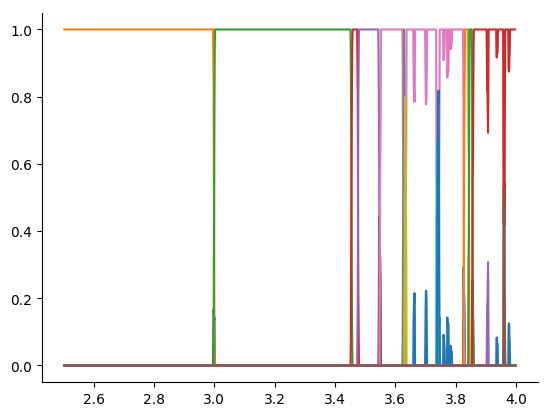
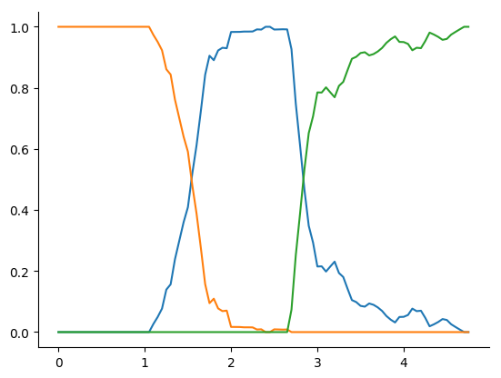

Basic Usage
In the following we will show how the library works on two example, a logistic map and a first order Kuramoto network. All important routines and functions also have docstrings that can be either viewed in the reference here in this documentation or by using Julia's regular help interface (first typing "?" and then the name of the function).
First, we import the library and all other packages that we need to set up the systems.
using MCBB
using LightGraphs
using Clustering
using DifferentialEquations
using Distributions
using StatsBase
using Plots
using Random
import PyPlot
Random.Random.seed!(13423);Logistic Map
The logistic map $x_{n+1} = r x_{n}(1 - x_{n})$ is one of the most well known and studied chaotic systems. Even though this library is tailored towards higher dimensional and multistable system, we can study the logistic map with it as a first example as well.
First, we set up how the parameter, $r$ and the initial conditions should be varied. The function generating the ICs and parameters need have either ()->new_value::Number or (i_run)->new_value::Number signature.
rdist = Uniform(2.5,4);
icdist = Uniform(0.1,0.99);
r = ()->rand(rdist);
ic_ranges = ()->rand(icdist);There are also other ways to setup the initial conditions. You can define a function that returns an array for all system dimensions for multidimensional systems or provide arrays with the values directly. See DEMCBBProblem for more infos. Then, we set up how many initial conditons / parameter points we want to generate and solve
N_ic = 5000;The parameters of our systems are supposed to be structs whose supertype is DEParameters, e.g. struct my_par <: DEParameters end. In this case, the logistic map and its parameters are already pre-made in the library:
pars = logistic_parameters(r());
par_var = (:r,r);The tuple par_var contains the name of the parameter field to be changed as a symbol and the function how it should be changed. This tuple will be automatically converted to a ParameterVar which also could have been constructed directly. This can be needed for more complicated setups.
Next, we set up the base DifferentialEquations problem (if you are interested in problems that can't be solved with DifferentialEquations, see CustomMCBBProblem). As mentioned, the logistic map is already one of the pre-made systems, thus
dp = DiscreteProblem(logistic, [ic_ranges()], (0.,1000.), pars);We are only interested in solutions after 80% of the integration time
tail_frac = 0.8;and can use the pre-made eval_ode_run for analyzing the solutions of each Differential Equation (see eval_ode_run for more information). This eval_ode_run will track the mean, std and Kullback-Leibler divergence of the solutions. Thus we can finally setup the DEMCBBProblem with
log_emcp = DEMCBBProblem(dp, ic_ranges, N_ic, pars, (:r,r), eval_ode_run, tail_frac);and solve it
log_sol = solve(log_emcp);Subsequently, we calculate the distance matrix and cluster the results
D = distance_matrix(log_sol, log_emcp, [1,0.75,0.5,1.]);
In order to determine the $\epsilon$ parameter of DBSCAN we suggest one of three possibilities:
- k-dist graph to the 4-th Neareast neighbour:
k_dist - cumulative KNN distance:
KNN_distandKNN_dist_relative - response analysis by continuation of the integration (more complicated and computationally intensive):
eval_ode_run
For many systems we tried, we found that all three methods yield similar results. In this case we take the median of the $0.5\\%$ of all members nearest neighbour (in this case 25-NN).
median(KNN_dist_relative(D))
> 0.06565762359625632db_eps = 0.04
db_res = dbscan(D,db_eps,4)
cluster_members = cluster_membership(log_emcp,db_res,0.005,0.001);
plot(cluster_members)
For more details, see DEMCBBProblem and the other references linked in this section.
Kuramoto Network
Next, we will investigate the onset of synchronization in system of first order Kuramoto oscillators on an Erdos-Renyi random network. We set up the initial conditions and parameters similar to the first example:
N = 20
K = 0.5
nd = Normal(0.5, 0.1)
w_i_par = rand(nd,N) # eigenfrequencies
net = erdos_renyi(N, 0.2)
A = adjacency_matrix(net)
ic = zeros(N)
ic_dist = Uniform(-pi,pi)
kdist = Uniform(0,5)
ic_ranges = ()->rand(ic_dist)
N_ics = 5000
K_range = ()->rand(kdist)
pars = kuramoto_network_parameters(K, w_i_par, N, A)
rp = ODEProblem(kuramoto_network, ic, (0.,1000.), pars)In this case we want to have another evaluation function. We don't need the Kullback-Leibler divergence, but we are interested in the global order parameter as the system to compare it to our results.
function k_order_parameter(u::AbstractArray)
uend = u[:,end]
N = length(uend)
1. /N*sqrt((sum(sin.(uend)))^2+(sum(cos.(uend)))^2)
end
function eval_ode_run_kura(sol, i)
N_dim = length(sol.prob.u0)
state_filter = collect(1:N_dim)
eval_funcs = [mean, std]
matrix_eval_funcs = []
global_eval_funcs = [k_order_parameter]
eval_ode_run(sol, i, state_filter, eval_funcs, matrix_eval_funcs, global_eval_funcs, cyclic_setback=true)
endIt is also possible to track measures that return matrices or arrays of different size from the 1-d length-N arrays, like cross-correlation or covariance with the matrix_eval_funcs keyword. See eval_ode_run for a detailed reference.
We set up the DEMCBBProblem again with
tail_frac = 0.9
ko_mcp = DEMCBBProblem(rp, ic_ranges, N_ics, pars, (:K, K_range), eval_ode_run_kura, tail_frac)
kosol = solve(ko_mcp)and solve and analyze it. In this case we set the weight of the order parameter to zero as we only want to have it as a comparison for our results.
D_k = distance_matrix(kosol, ko_mcp, [1.,0.5,0,1.], histograms=true, k_bin=2); # no weight on the order_parameter
db_eps = 1.15 # we found that value by scanning manually
db_res = dbscan(D_k,db_eps,20)
cluster_members = cluster_membership(ko_mcp,db_res,0.1,0.025);
plot(cluster_members)
In this plot we see the onset of synchronization clearly as three distinctive clusters. We can compare this to the order parameter that we calculated:
plot(parameter(ko_mcp),get_measure(kosol,3), xlabel="Coupling K", ylabel="Order Parameter R")
As we see the cluster membership diagram really shows the onset of the synchronization.
Solution Object
The solution object stores all the measures and some other information. Introspective Features in this manual goes into some more detail about it, but it is important to note that every of the measures are ordered in the following way: * first: all per dimension measures in the same order as in the eval_funcs array (default: 1: mean, 2: SD, 3: KL-Div) * then: all matrix measures * then: all global measures * optional: for routines that also incorporate the parameters, they are last in order. This order plays a role for all routines that work with one of the measures.
Distance Matrix/Metric
The distance matrix calculation is one of these cases. When we assign the weights in the call to distance matrix, we have to adhere to this ordering. For the example above [1.,0.75,0.,1.] thus means: weight 1. on mean, 0.75 on SD, 0. on KL-Div and 1. on the parameter. The clustering is based on the distance matrix. Its calculation is performed with 'distance_matrix'. Naturally they are many ways how to define a distance matrix between the solutions. They are two main different variants in the library so far
- Directly compute the difference between the individual values of the measures with a suitable norm. This is the default option (with an L1-norm used)
- For each measure first compute a histogram or empirical CDF for each run and compare these with each other. For this purpose the keyword
histograms=trueneeds to be set. This is recommended when investigating systems with many (more or less) identical subparts such as oscillator networks and the specific position/number of a single oscillator is not important. The default measure to compare the histograms is the 1-Wasserstein distance.
The distance functions return elements of type DistanceMatrix or DistanceMatrixHist. They behave just like regular arrays (and are in fact subtypes of AbstractArray) but also hold additional information about how the distance was computed. This can be espacially useful when using the histogram method.
Clustering
So far, we used mainly DBSCAN for the clustering. In principal, one can also use other clustering algorithms though. DBSCAN also returns a "Noise Cluster"/Outlier. In the standard julia implemenation this is Cluster "0", here for all routines the Outliers are Cluster "1" and all other clusters have the following ascending numbers.
How-to define your own systems.
System Functions
The system function follow the notation of DifferentialEquations.jl and should thus have arguments (du,u,p,t) that are changed inplace. For example a Roessler system can be definded with:
function roessler!(dx,x,p::roessler_pars,t)
dx[1] = - x[2] - x[3]
dx[2] = x[1] + p.a*x[2]
dx[3] = p.b + (x[1] - p.c)*x[3]
endFor more information also see the documentation of DifferentialEquations.jl. In case one wants to work with systems that can't be solved with DifferentialEquations.jl, one has to use CustomMCBBProblem.
Parameters
All parameters have to have DEParameters as a supertype to work. Thus, for the Roessler example
struct roessler_pars <: DEParameters
a::Number
b::Number
c::Number
endworks as the parameter type. See DEParameters and subsequent doc strings for a list of all pre-made functions and parameters.
Varying hidden/background parameters
It is also possible to investigate setups that have many hidden/background parameters and one/two control parameters. The hidden/background parameters are then treated similar to initial conditions and are randomly generated for each control parameter. See HiddenParameterVar and DEMCBBProblem for more infos.
Saving & Loading
BSON and JLD2 provide easy ways to save and load problem and solutions objects. However sometimes they can be a bit errorprone. If one encounters these kind of errors while loading saved JLD objects, one can also used the save, load_prob and load_sol routines.
Tips & Tricks
The method relies on random sampling, if you want to share scripts or notebooks and reliably get the same results, you should use a constant seed for the RNG with
using Random
Random.seed!(23124);This is primarily needed because the ordering of the clusters can change for every run through the script.
In the next section, we will show how these results can be further analyzed.